Images are grouped by the dominant failure mode. Cluttered scenes use ≥ 10 ground-truth instances (75th percentile of your dataset).
The model produced no masks or no label file for these images.
Why the model struggles: Without predictions there is nothing to compare to ground truth. Common causes: confidence threshold too high, image content unlike training data, or pipeline did not write labels.
Typical signals — avg IoU: 0.0, " "avg FN: 0.33, avg GT instances: 0.33
000000000514.jpg — IoU 0.00, FN 1, GT 1: No prediction instances (GT=1, pred=0). Model produced no instances while ground truth has 1 instance(s). Zero average IoU on matched instances — masks do not overlap ground truth. Instance count or class alignment does not match ground truth.000000000250.jpg — IoU 0.00, FN 0, GT 0: No prediction instances (GT=0, pred=0). No segmentation output (empty labels). Listed under missing_groundtruth — no ground-truth file to compare against. No ground-truth label file for this image; metrics are not fully comparable. Instance count or class alignment does not match ground truth.000000000508.jpg — IoU 0.00, FN 0, GT 0: No prediction instances (GT=0, pred=0). No segmentation output (empty labels). Listed under missing_groundtruth — no ground-truth file to compare against. No ground-truth label file for this image; metrics are not fully comparable. Instance count or class alignment does not match ground truth.Predictions exist but there is no matching ground-truth label file.
Why the model struggles: Metrics are not meaningful without GT. These cases are flagged so they are not confused with model performance on labeled data.
Typical signals — avg IoU: 0.0, " "avg FN: 0.0, avg GT instances: 0.0
sample.jpg — IoU 0.00, FN 0, GT 0: No ground-truth labels available for this image; segmentation output cannot be scored.Many objects in the scene and low average IoU on matched instances.
Why the model struggles: Crowded scenes with overlapping instances make instance boundaries hard to separate. The model may detect some objects but mask shapes overlap poorly with ground truth, driving IoU down.
Typical signals — avg IoU: 0.0, " "avg FN: 16.0, avg GT instances: 16.0
000000000149.jpg — IoU 0.00, FN 22, GT 22: 22 GT instances (cluttered, ≥10); average IoU 0.00 — dense overlap likely hurts mask quality.000000000643.jpg — IoU 0.00, FN 20, GT 20: 20 GT instances (cluttered, ≥10); average IoU 0.00 — dense overlap likely hurts mask quality.000000000520.jpg — IoU 0.00, FN 11, GT 11: 11 GT instances (cluttered, ≥10); average IoU 0.00 — dense overlap likely hurts mask quality.000000000536.jpg — IoU 0.00, FN 11, GT 11: 11 GT instances (cluttered, ≥10); average IoU 0.00 — dense overlap likely hurts mask quality.Dense scenes where the model misses a large share of ground-truth instances.
Why the model struggles: High instance count increases occlusion and competition between detections. The model often finds the salient objects but fails to recall smaller or partially hidden instances (high false negatives).
Typical signals — avg IoU: 0.7127, " "avg FN: 14.12, avg GT instances: 19.0
000000000164.jpg — IoU 0.78, FN 37, GT 40: 40 GT instances (cluttered); 37 missed (92% of GT) — model recalls only part of the crowded scene.000000000315.jpg — IoU 0.68, FN 33, GT 38: 38 GT instances (cluttered); 33 missed (87% of GT) — model recalls only part of the crowded scene.000000000196.jpg — IoU 0.75, FN 30, GT 42: 42 GT instances (cluttered); 30 missed (71% of GT) — model recalls only part of the crowded scene.000000000257.jpg — IoU 0.68, FN 22, GT 33: 33 GT instances (cluttered); 22 missed (67% of GT) — model recalls only part of the crowded scene.000000000540.jpg — IoU 0.53, FN 19, GT 20: 20 GT instances (cluttered); 19 missed (95% of GT) — model recalls only part of the crowded scene.Both GT and predictions exist, but matched IoU is zero.
Why the model struggles: The model sees something in the image but segment boundaries or classes do not align with any GT instance at the IoU threshold — wrong object, wrong region, or systematic coordinate/scale mismatch.
Typical signals — avg IoU: 0.0, " "avg FN: 3.79, avg GT instances: 3.79
000000000049.jpg — IoU 0.00, FN 9, GT 9: GT=9, pred=9, but zero IoU on matches — detections do not align with any GT mask.000000000077.jpg — IoU 0.00, FN 8, GT 8: GT=8, pred=4, but zero IoU on matches — detections do not align with any GT mask.000000000260.jpg — IoU 0.00, FN 7, GT 7: GT=7, pred=7, but zero IoU on matches — detections do not align with any GT mask.000000000061.jpg — IoU 0.00, FN 5, GT 5: GT=5, pred=3, but zero IoU on matches — detections do not align with any GT mask.000000000560.jpg — IoU 0.00, FN 5, GT 5: GT=5, pred=3, but zero IoU on matches — detections do not align with any GT mask.Very high false negatives relative to the number of objects.
Why the model struggles: The model captures only a fraction of labeled instances. Often seen in busy images, small objects, or classes the weights handle poorly.
Typical signals — avg IoU: 0.7408, " "avg FN: 5.75, avg GT instances: 7.75
000000000247.jpg — IoU 0.76, FN 7, GT 8: 7 of 8 instances missed (88%) — severe recall failure.000000000486.jpg — IoU 0.76, FN 7, GT 8: 7 of 8 instances missed (88%) — severe recall failure.000000000109.jpg — IoU 0.57, FN 6, GT 8: 6 of 8 instances missed (75%) — severe recall failure.000000000074.jpg — IoU 0.78, FN 6, GT 8: 6 of 8 instances missed (75%) — severe recall failure.000000000419.jpg — IoU 0.68, FN 5, GT 7: 5 of 7 instances missed (71%) — severe recall failure.| Image | Category | Severity | Issues | IoU | FN | FP | Class OK | GT # | Pred # | Notes |
|---|---|---|---|---|---|---|---|---|---|---|
| 000000000514.jpg | No segmentation output | critical | no_segmentationlow_iouclassification_error | 0.0000 | 1 | 0 | no | 1 | 0 | Model produced no instances while ground truth has 1 instance(s). Zero average IoU on matched instances — masks do not overlap ground truth. Instance count or class alignment does not match ground truth. |
| 000000000250.jpg | No segmentation output | critical | no_segmentationno_groundtruthclassification_error | 0.0000 | 0 | 0 | no | 0 | 0 | No segmentation output (empty labels). Listed under missing_groundtruth — no ground-truth file to compare against. No ground-truth label file for this image; metrics are not fully comparable. Instance count or class alignment does not match ground truth. |
| 000000000508.jpg | No segmentation output | critical | no_segmentationno_groundtruthclassification_error | 0.0000 | 0 | 0 | no | 0 | 0 | No segmentation output (empty labels). Listed under missing_groundtruth — no ground-truth file to compare against. No ground-truth label file for this image; metrics are not fully comparable. Instance count or class alignment does not match ground truth. |
000000000149.jpg 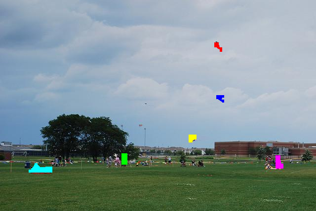 |
Heavily cluttered — low mask overlap | high | false_negativelow_iouclassification_errorfalse_positive | 0.0000 | 22 | 6 | no | 22 | 6 | 22 ground-truth instance(s) were missed (false negative). Zero average IoU on matched instances — masks do not overlap ground truth. Instance count or class alignment does not match ground truth. 6 extra predicted instance(s) not matched to ground truth. |
000000000643.jpg 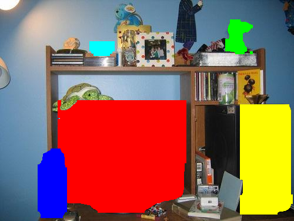 |
Heavily cluttered — low mask overlap | high | false_negativelow_iouclassification_errorfalse_positive | 0.0000 | 20 | 5 | no | 20 | 5 | 20 ground-truth instance(s) were missed (false negative). Zero average IoU on matched instances — masks do not overlap ground truth. Instance count or class alignment does not match ground truth. 5 extra predicted instance(s) not matched to ground truth. |
000000000520.jpg 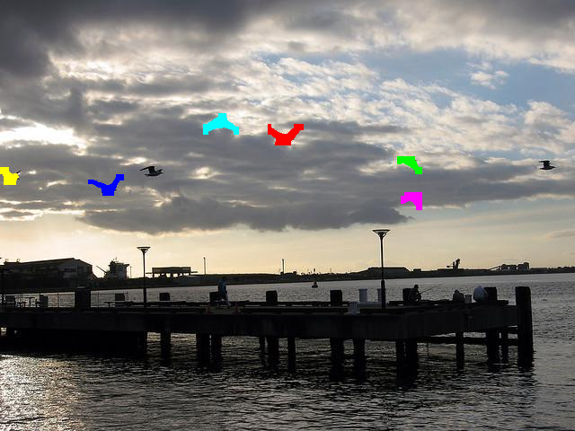 |
Heavily cluttered — low mask overlap | high | false_negativelow_iouclassification_errorfalse_positive | 0.0000 | 11 | 6 | no | 11 | 6 | 11 ground-truth instance(s) were missed (false negative). Zero average IoU on matched instances — masks do not overlap ground truth. Instance count or class alignment does not match ground truth. 6 extra predicted instance(s) not matched to ground truth. |
000000000536.jpg 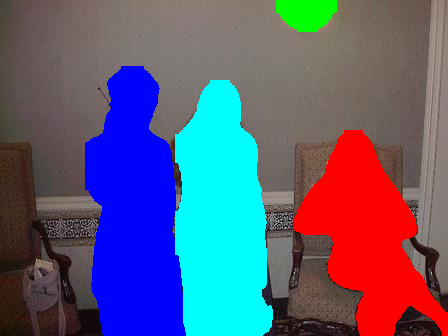 |
Heavily cluttered — low mask overlap | high | false_negativelow_iouclassification_errorfalse_positive | 0.0000 | 11 | 4 | no | 11 | 4 | 11 ground-truth instance(s) were missed (false negative). Zero average IoU on matched instances — masks do not overlap ground truth. Instance count or class alignment does not match ground truth. 4 extra predicted instance(s) not matched to ground truth. |
000000000164.jpg 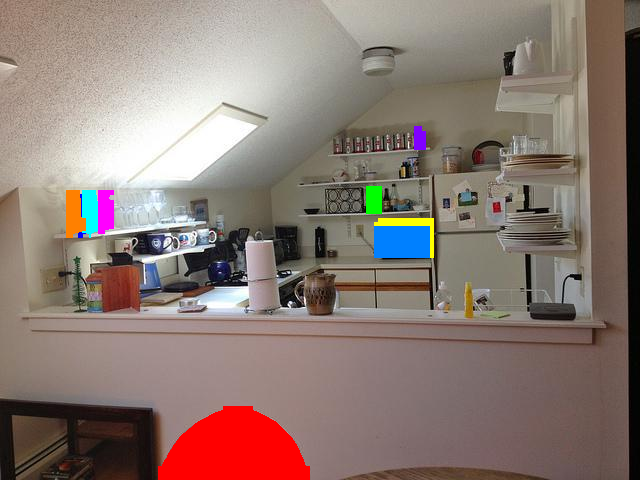 |
Heavily cluttered — many missed objects | high | false_negativeclassification_errorfalse_positive | 0.7841 | 37 | 6 | no | 40 | 9 | 37 ground-truth instance(s) were missed (false negative). Instance count or class alignment does not match ground truth. 6 extra predicted instance(s) not matched to ground truth. |
000000000315.jpg 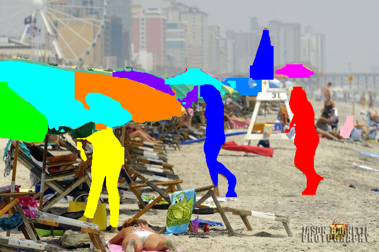 |
Heavily cluttered — many missed objects | high | false_negativeclassification_errorfalse_positive | 0.6842 | 33 | 8 | no | 38 | 13 | 33 ground-truth instance(s) were missed (false negative). Instance count or class alignment does not match ground truth. 8 extra predicted instance(s) not matched to ground truth. |
000000000196.jpg 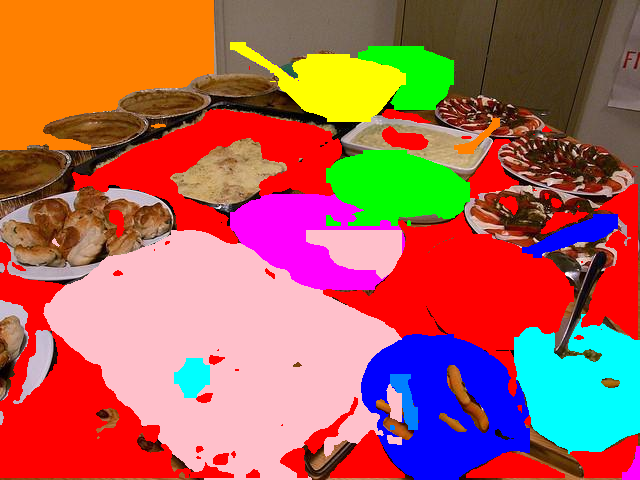 |
Heavily cluttered — many missed objects | high | false_negativeclassification_errorfalse_positive | 0.7465 | 30 | 5 | no | 42 | 17 | 30 ground-truth instance(s) were missed (false negative). Instance count or class alignment does not match ground truth. 5 extra predicted instance(s) not matched to ground truth. |
000000000257.jpg 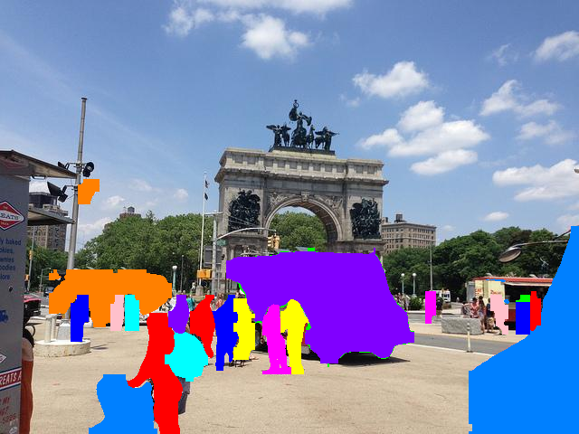 |
Heavily cluttered — many missed objects | high | false_negativeclassification_errorfalse_positive | 0.6803 | 22 | 10 | no | 33 | 22 | 22 ground-truth instance(s) were missed (false negative). Instance count or class alignment does not match ground truth. 10 extra predicted instance(s) not matched to ground truth. |
000000000540.jpg |
Heavily cluttered — many missed objects | high | false_negativeclassification_error | 0.5345 | 19 | 0 | no | 20 | 1 | 19 ground-truth instance(s) were missed (false negative). Instance count or class alignment does not match ground truth. |
000000000294.jpg 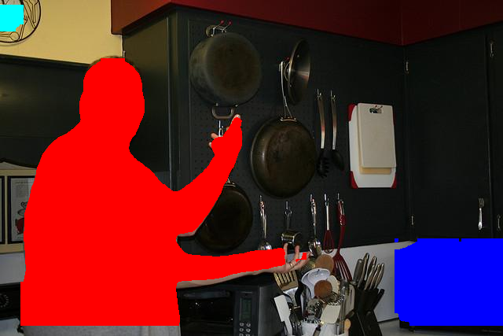 |
Heavily cluttered — many missed objects | high | false_negativeclassification_errorfalse_positive | 0.8701 | 18 | 1 | no | 20 | 3 | 18 ground-truth instance(s) were missed (false negative). Instance count or class alignment does not match ground truth. 1 extra predicted instance(s) not matched to ground truth. |
000000000071.jpg 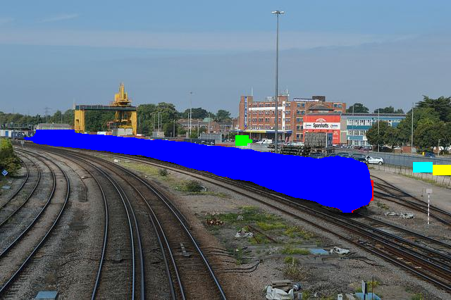 |
Heavily cluttered — many missed objects | high | false_negativeclassification_errorfalse_positive | 0.5549 | 15 | 3 | no | 16 | 5 | 15 ground-truth instance(s) were missed (false negative). Instance count or class alignment does not match ground truth. 3 extra predicted instance(s) not matched to ground truth. |
000000000127.jpg 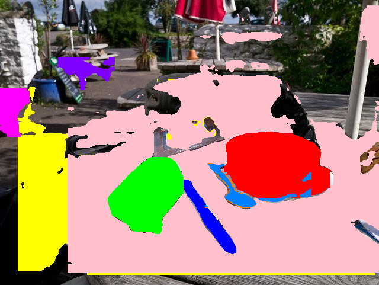 |
Heavily cluttered — many missed objects | high | false_negativeclassification_errorfalse_positive | 0.7052 | 15 | 8 | no | 17 | 10 | 15 ground-truth instance(s) were missed (false negative). Instance count or class alignment does not match ground truth. 8 extra predicted instance(s) not matched to ground truth. |
000000000110.jpg |
Heavily cluttered — many missed objects | high | false_negativeclassification_errorfalse_positive | 0.7327 | 13 | 6 | no | 24 | 18 | 13 ground-truth instance(s) were missed (false negative). Instance count or class alignment does not match ground truth. 6 extra predicted instance(s) not matched to ground truth. |
000000000113.jpg 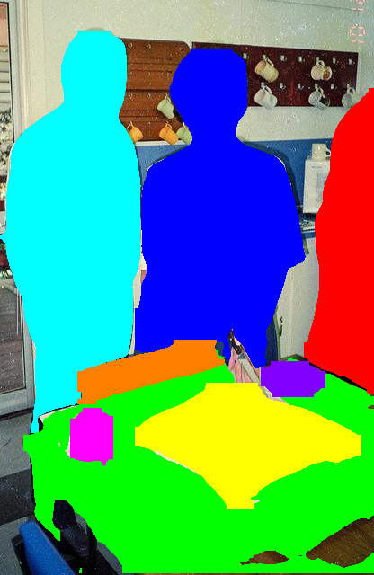 |
Heavily cluttered — many missed objects | high | false_negativeclassification_errorfalse_positive | 0.8275 | 12 | 2 | no | 18 | 8 | 12 ground-truth instance(s) were missed (false negative). Instance count or class alignment does not match ground truth. 2 extra predicted instance(s) not matched to ground truth. |
000000000564.jpg 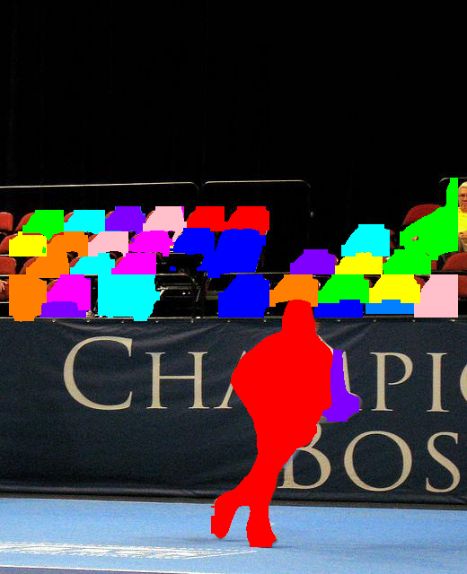 |
Heavily cluttered — many missed objects | high | false_negativeclassification_errorfalse_positive | 0.5757 | 12 | 34 | no | 16 | 38 | 12 ground-truth instance(s) were missed (false negative). Instance count or class alignment does not match ground truth. 34 extra predicted instance(s) not matched to ground truth. |
000000000357.jpg 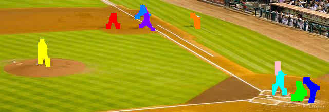 |
Heavily cluttered — many missed objects | high | false_negativeclassification_errorfalse_positive | 0.5745 | 11 | 4 | no | 17 | 10 | 11 ground-truth instance(s) were missed (false negative). Instance count or class alignment does not match ground truth. 4 extra predicted instance(s) not matched to ground truth. |
000000000446.jpg 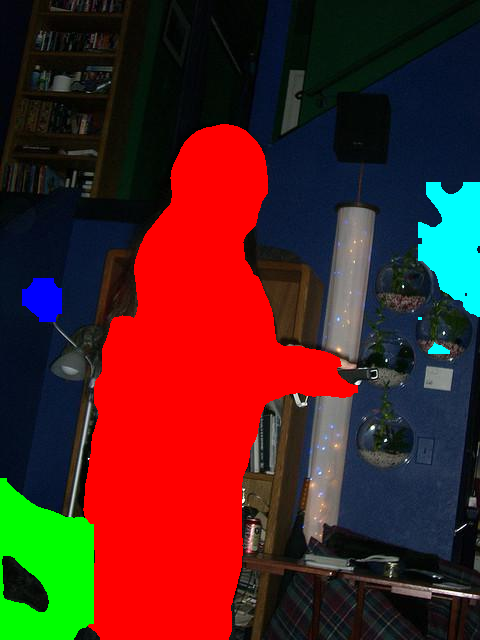 |
Heavily cluttered — many missed objects | high | false_negativeclassification_errorfalse_positive | 0.7453 | 11 | 2 | no | 13 | 4 | 11 ground-truth instance(s) were missed (false negative). Instance count or class alignment does not match ground truth. 2 extra predicted instance(s) not matched to ground truth. |
000000000531.jpg 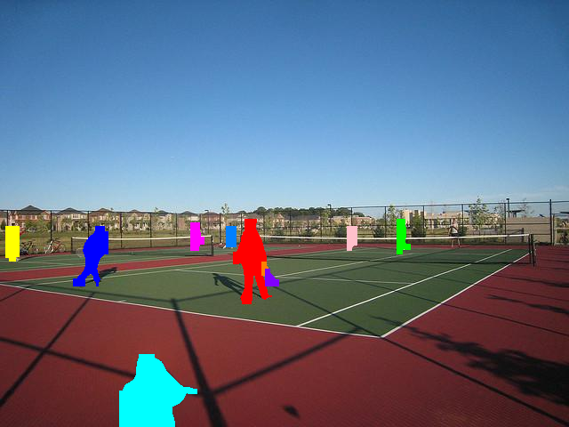 |
Heavily cluttered — many missed objects | high | false_negativeclassification_errorfalse_positive | 0.6189 | 11 | 6 | no | 15 | 10 | 11 ground-truth instance(s) were missed (false negative). Instance count or class alignment does not match ground truth. 6 extra predicted instance(s) not matched to ground truth. |
000000000542.jpg 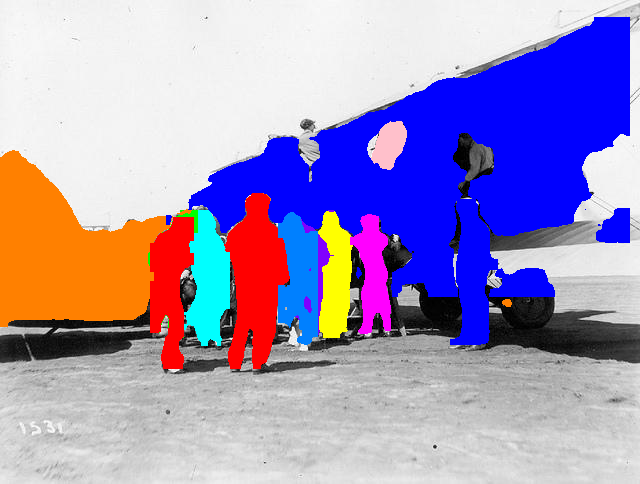 |
Heavily cluttered — many missed objects | high | false_negativeclassification_errorfalse_positive | 0.6459 | 11 | 5 | no | 17 | 12 | 11 ground-truth instance(s) were missed (false negative). Instance count or class alignment does not match ground truth. 5 extra predicted instance(s) not matched to ground truth. |
000000000641.jpg 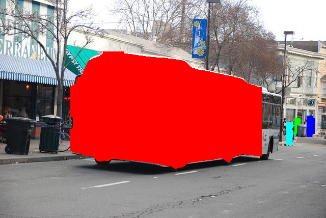 |
Heavily cluttered — many missed objects | high | false_negativeclassification_errorfalse_positive | 0.8175 | 11 | 3 | no | 12 | 4 | 11 ground-truth instance(s) were missed (false negative). Instance count or class alignment does not match ground truth. 3 extra predicted instance(s) not matched to ground truth. |
000000000544.jpg 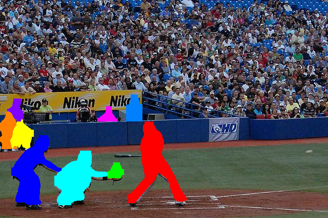 |
Heavily cluttered — many missed objects | high | false_negativeclassification_errorfalse_positive | 0.6091 | 10 | 3 | no | 16 | 9 | 10 ground-truth instance(s) were missed (false negative). Instance count or class alignment does not match ground truth. 3 extra predicted instance(s) not matched to ground truth. |
000000000584.jpg 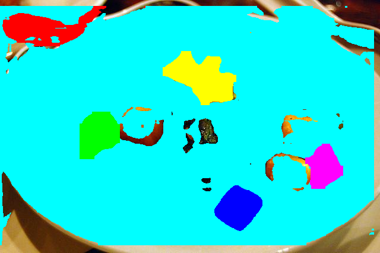 |
Heavily cluttered — many missed objects | high | false_negativeclassification_errorfalse_positive | 0.7160 | 10 | 2 | no | 14 | 6 | 10 ground-truth instance(s) were missed (false negative). Instance count or class alignment does not match ground truth. 2 extra predicted instance(s) not matched to ground truth. |
000000000328.jpg 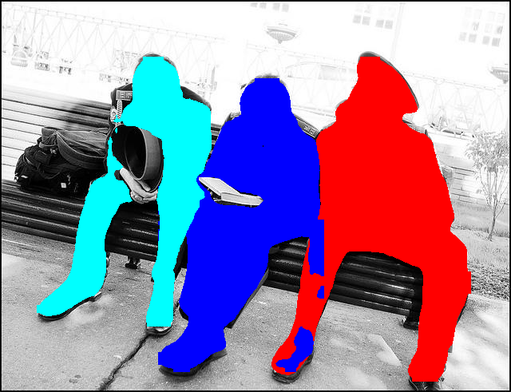 |
Heavily cluttered — many missed objects | high | false_negativeclassification_errorfalse_positive | 0.7963 | 9 | 1 | no | 11 | 3 | 9 ground-truth instance(s) were missed (false negative). Instance count or class alignment does not match ground truth. 1 extra predicted instance(s) not matched to ground truth. |
000000000384.jpg 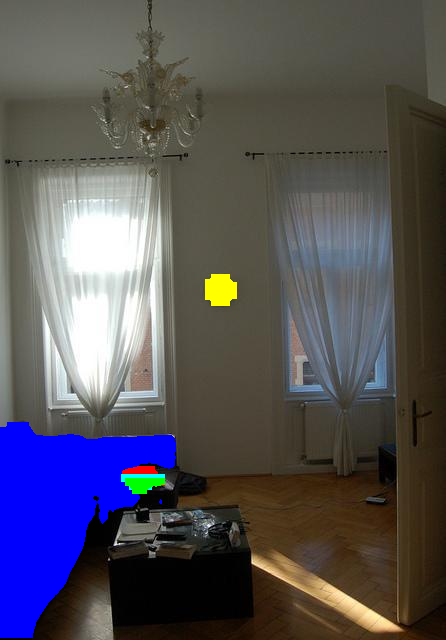 |
Heavily cluttered — many missed objects | high | false_negativeclassification_errorfalse_positive | 0.7792 | 9 | 3 | no | 11 | 5 | 9 ground-truth instance(s) were missed (false negative). Instance count or class alignment does not match ground truth. 3 extra predicted instance(s) not matched to ground truth. |
000000000389.jpg |
Heavily cluttered — many missed objects | high | false_negativeclassification_errorfalse_positive | 0.7933 | 8 | 4 | no | 14 | 10 | 8 ground-truth instance(s) were missed (false negative). Instance count or class alignment does not match ground truth. 4 extra predicted instance(s) not matched to ground truth. |
000000000395.jpg 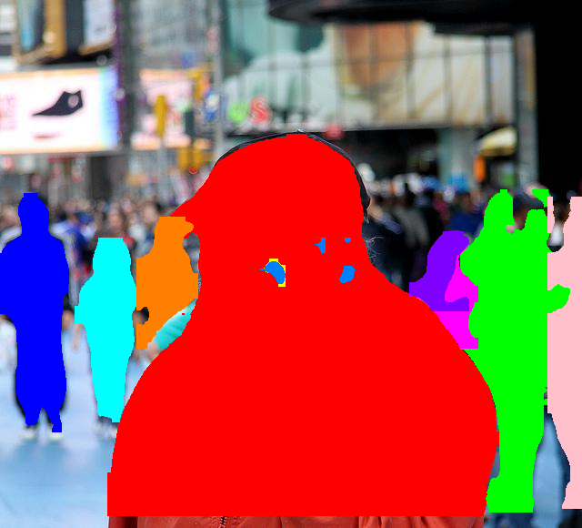 |
Heavily cluttered — many missed objects | high | false_negativeclassification_errorfalse_positive | 0.7418 | 8 | 5 | no | 13 | 10 | 8 ground-truth instance(s) were missed (false negative). Instance count or class alignment does not match ground truth. 5 extra predicted instance(s) not matched to ground truth. |
000000000612.jpg 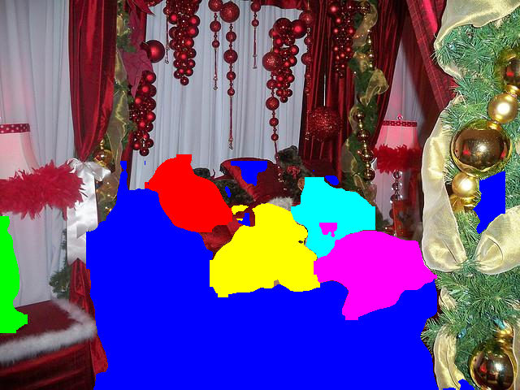 |
Heavily cluttered — many missed objects | high | false_negativeclassification_errorfalse_positive | 0.8561 | 8 | 3 | no | 11 | 6 | 8 ground-truth instance(s) were missed (false negative). Instance count or class alignment does not match ground truth. 3 extra predicted instance(s) not matched to ground truth. |
000000000241.jpg 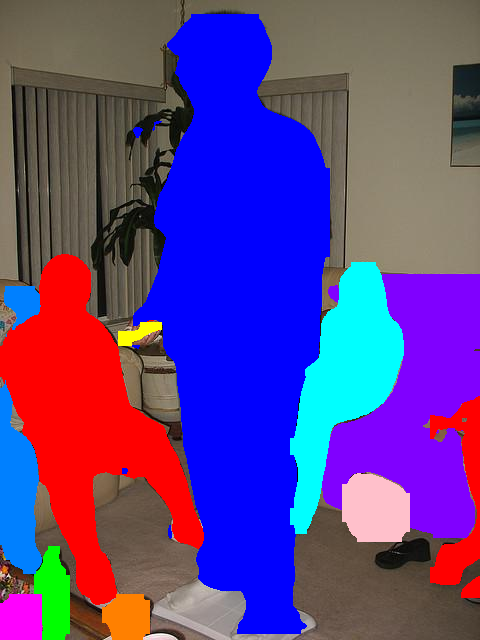 |
Heavily cluttered — many missed objects | high | false_negativeclassification_errorfalse_positive | 0.7986 | 5 | 2 | no | 14 | 11 | 5 ground-truth instance(s) were missed (false negative). Instance count or class alignment does not match ground truth. 2 extra predicted instance(s) not matched to ground truth. |
000000000308.jpg 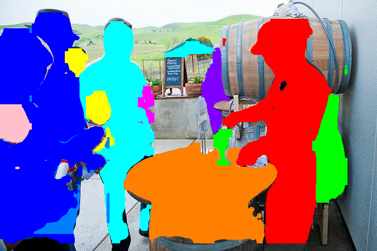 |
Heavily cluttered — many missed objects | high | false_negativeclassification_errorfalse_positive | 0.6292 | 5 | 6 | no | 13 | 15 | 5 ground-truth instance(s) were missed (false negative). Instance count or class alignment does not match ground truth. 6 extra predicted instance(s) not matched to ground truth. |
000000000247.jpg 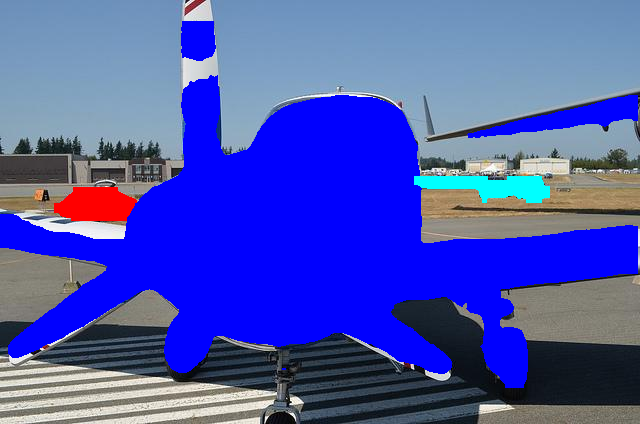 |
Severe under-detection | high | false_negativeclassification_errorfalse_positive | 0.7552 | 7 | 2 | no | 8 | 3 | 7 ground-truth instance(s) were missed (false negative). Instance count or class alignment does not match ground truth. 2 extra predicted instance(s) not matched to ground truth. |
000000000486.jpg 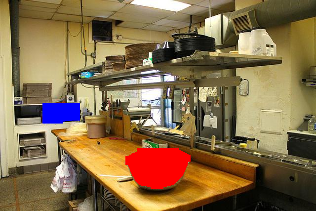 |
Severe under-detection | high | false_negativeclassification_errorfalse_positive | 0.7569 | 7 | 1 | no | 8 | 2 | 7 ground-truth instance(s) were missed (false negative). Instance count or class alignment does not match ground truth. 1 extra predicted instance(s) not matched to ground truth. |
000000000074.jpg 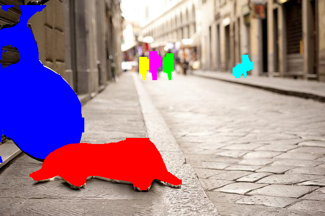 |
Severe under-detection | high | false_negativeclassification_errorfalse_positive | 0.7753 | 6 | 4 | no | 8 | 6 | 6 ground-truth instance(s) were missed (false negative). Instance count or class alignment does not match ground truth. 4 extra predicted instance(s) not matched to ground truth. |
000000000109.jpg 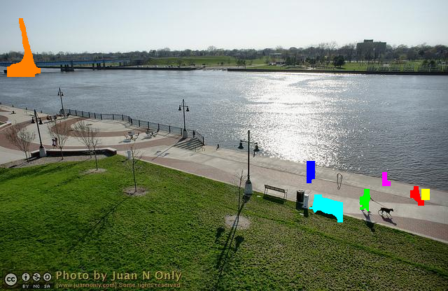 |
Severe under-detection | high | false_negativeclassification_errorfalse_positive | 0.5718 | 6 | 5 | no | 8 | 7 | 6 ground-truth instance(s) were missed (false negative). Instance count or class alignment does not match ground truth. 5 extra predicted instance(s) not matched to ground truth. |
000000000009.jpg 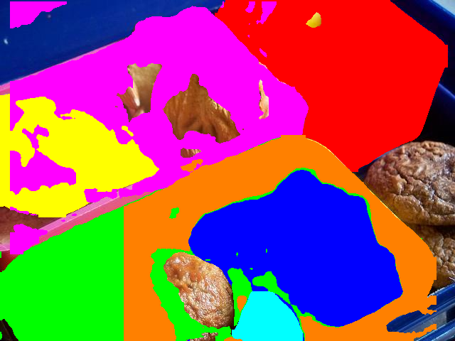 |
Severe under-detection | high | false_negativeclassification_errorfalse_positive | 0.8847 | 5 | 3 | no | 8 | 7 | 5 ground-truth instance(s) were missed (false negative). Instance count or class alignment does not match ground truth. 3 extra predicted instance(s) not matched to ground truth. |
000000000201.jpg 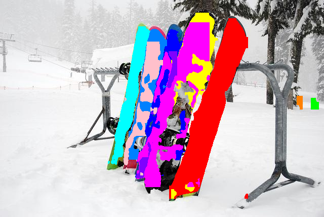 |
Severe under-detection | high | false_negativeclassification_errorfalse_positive | 0.8112 | 5 | 7 | no | 8 | 10 | 5 ground-truth instance(s) were missed (false negative). Instance count or class alignment does not match ground truth. 7 extra predicted instance(s) not matched to ground truth. |
000000000397.jpg 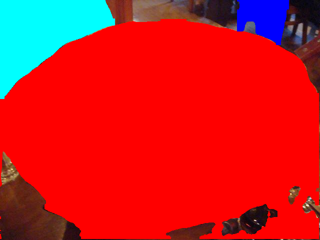 |
Severe under-detection | high | false_negativeclassification_errorfalse_positive | 0.6966 | 5 | 1 | no | 7 | 3 | 5 ground-truth instance(s) were missed (false negative). Instance count or class alignment does not match ground truth. 1 extra predicted instance(s) not matched to ground truth. |
000000000419.jpg 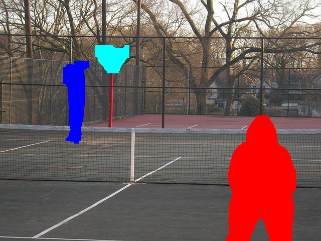 |
Severe under-detection | high | false_negativeclassification_errorfalse_positive | 0.6750 | 5 | 1 | no | 7 | 3 | 5 ground-truth instance(s) were missed (false negative). Instance count or class alignment does not match ground truth. 1 extra predicted instance(s) not matched to ground truth. |
000000000049.jpg 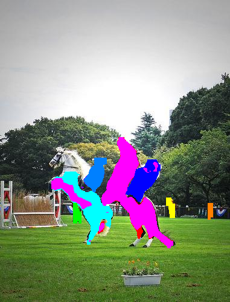 |
Detections present but masks do not match | high | false_negativelow_iouclassification_errorfalse_positive | 0.0000 | 9 | 9 | no | 9 | 9 | 9 ground-truth instance(s) were missed (false negative). Zero average IoU on matched instances — masks do not overlap ground truth. Instance count or class alignment does not match ground truth. 9 extra predicted instance(s) not matched to ground truth. |
000000000077.jpg 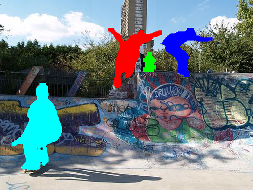 |
Detections present but masks do not match | high | false_negativelow_iouclassification_errorfalse_positive | 0.0000 | 8 | 4 | no | 8 | 4 | 8 ground-truth instance(s) were missed (false negative). Zero average IoU on matched instances — masks do not overlap ground truth. Instance count or class alignment does not match ground truth. 4 extra predicted instance(s) not matched to ground truth. |
000000000260.jpg 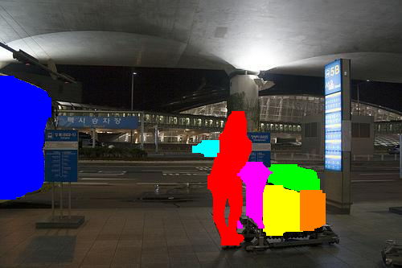 |
Detections present but masks do not match | high | false_negativelow_iouclassification_errorfalse_positive | 0.0000 | 7 | 7 | no | 7 | 7 | 7 ground-truth instance(s) were missed (false negative). Zero average IoU on matched instances — masks do not overlap ground truth. Instance count or class alignment does not match ground truth. 7 extra predicted instance(s) not matched to ground truth. |
000000000061.jpg 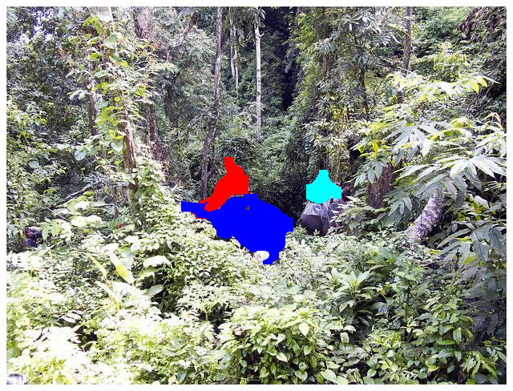 |
Detections present but masks do not match | high | false_negativelow_iouclassification_errorfalse_positive | 0.0000 | 5 | 3 | no | 5 | 3 | 5 ground-truth instance(s) were missed (false negative). Zero average IoU on matched instances — masks do not overlap ground truth. Instance count or class alignment does not match ground truth. 3 extra predicted instance(s) not matched to ground truth. |
000000000560.jpg 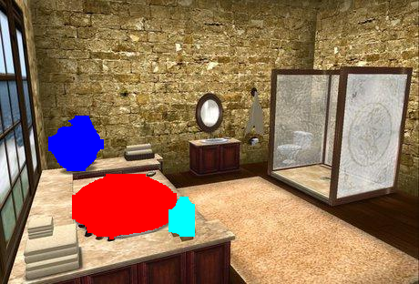 |
Detections present but masks do not match | high | false_negativelow_iouclassification_errorfalse_positive | 0.0000 | 5 | 3 | no | 5 | 3 | 5 ground-truth instance(s) were missed (false negative). Zero average IoU on matched instances — masks do not overlap ground truth. Instance count or class alignment does not match ground truth. 3 extra predicted instance(s) not matched to ground truth. |
000000000136.jpg 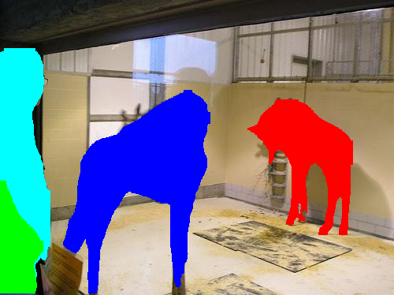 |
Detections present but masks do not match | high | false_negativelow_iouclassification_errorfalse_positive | 0.0000 | 4 | 4 | no | 4 | 4 | 4 ground-truth instance(s) were missed (false negative). Zero average IoU on matched instances — masks do not overlap ground truth. Instance count or class alignment does not match ground truth. 4 extra predicted instance(s) not matched to ground truth. |
000000000208.jpg |
Detections present but masks do not match | high | false_negativelow_iouclassification_errorfalse_positive | 0.0000 | 4 | 2 | no | 4 | 2 | 4 ground-truth instance(s) were missed (false negative). Zero average IoU on matched instances — masks do not overlap ground truth. Instance count or class alignment does not match ground truth. 2 extra predicted instance(s) not matched to ground truth. |
000000000309.jpg 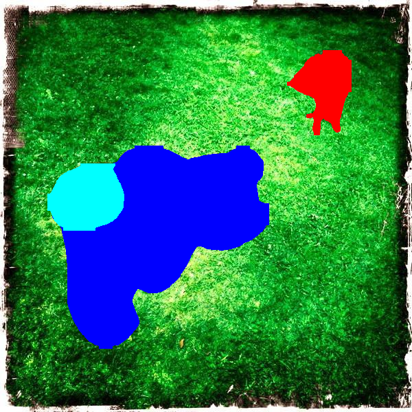 |
Detections present but masks do not match | high | false_negativelow_iouclassification_errorfalse_positive | 0.0000 | 4 | 3 | no | 4 | 3 | 4 ground-truth instance(s) were missed (false negative). Zero average IoU on matched instances — masks do not overlap ground truth. Instance count or class alignment does not match ground truth. 3 extra predicted instance(s) not matched to ground truth. |
000000000359.jpg |
Detections present but masks do not match | high | false_negativelow_iouclassification_errorfalse_positive | 0.0000 | 4 | 2 | no | 4 | 2 | 4 ground-truth instance(s) were missed (false negative). Zero average IoU on matched instances — masks do not overlap ground truth. Instance count or class alignment does not match ground truth. 2 extra predicted instance(s) not matched to ground truth. |
000000000491.jpg 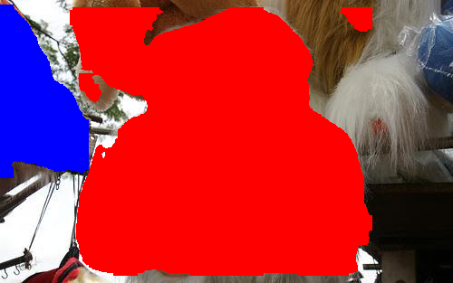 |
Detections present but masks do not match | high | false_negativelow_iouclassification_errorfalse_positive | 0.0000 | 4 | 2 | no | 4 | 2 | 4 ground-truth instance(s) were missed (false negative). Zero average IoU on matched instances — masks do not overlap ground truth. Instance count or class alignment does not match ground truth. 2 extra predicted instance(s) not matched to ground truth. |
000000000623.jpg 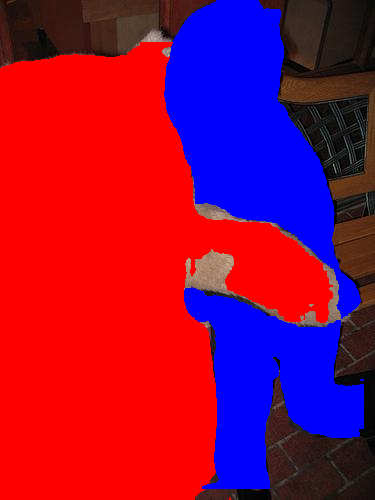 |
Detections present but masks do not match | high | false_negativelow_iouclassification_errorfalse_positive | 0.0000 | 4 | 2 | no | 4 | 2 | 4 ground-truth instance(s) were missed (false negative). Zero average IoU on matched instances — masks do not overlap ground truth. Instance count or class alignment does not match ground truth. 2 extra predicted instance(s) not matched to ground truth. |
000000000360.jpg 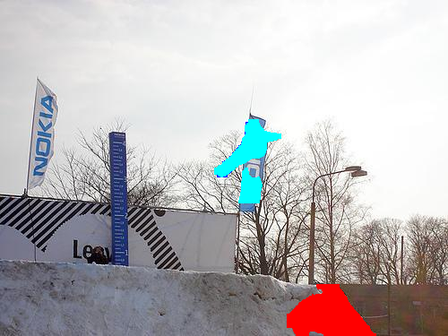 |
Detections present but masks do not match | high | false_negativelow_iouclassification_errorfalse_positive | 0.0000 | 3 | 3 | no | 3 | 3 | 3 ground-truth instance(s) were missed (false negative). Zero average IoU on matched instances — masks do not overlap ground truth. Instance count or class alignment does not match ground truth. 3 extra predicted instance(s) not matched to ground truth. |
000000000133.jpg 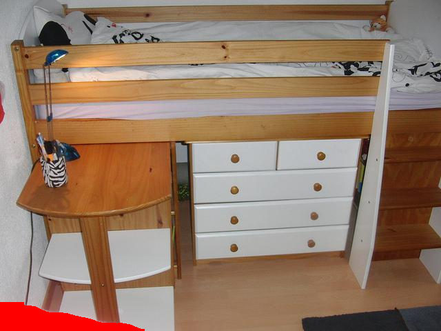 |
Detections present but masks do not match | high | false_negativelow_iouclassification_errorfalse_positive | 0.0000 | 2 | 1 | no | 2 | 1 | 2 ground-truth instance(s) were missed (false negative). Zero average IoU on matched instances — masks do not overlap ground truth. Instance count or class alignment does not match ground truth. 1 extra predicted instance(s) not matched to ground truth. |
000000000474.jpg 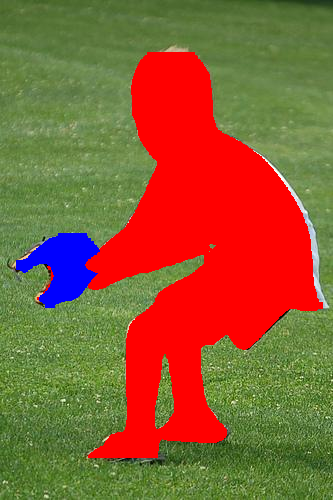 |
Detections present but masks do not match | high | false_negativelow_iouclassification_errorfalse_positive | 0.0000 | 2 | 2 | no | 2 | 2 | 2 ground-truth instance(s) were missed (false negative). Zero average IoU on matched instances — masks do not overlap ground truth. Instance count or class alignment does not match ground truth. 2 extra predicted instance(s) not matched to ground truth. |
000000000490.jpg 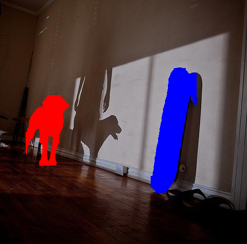 |
Detections present but masks do not match | high | false_negativelow_iouclassification_errorfalse_positive | 0.0000 | 2 | 2 | no | 2 | 2 | 2 ground-truth instance(s) were missed (false negative). Zero average IoU on matched instances — masks do not overlap ground truth. Instance count or class alignment does not match ground truth. 2 extra predicted instance(s) not matched to ground truth. |
000000000590.jpg |
Detections present but masks do not match | high | false_negativelow_iouclassification_errorfalse_positive | 0.0000 | 2 | 3 | no | 2 | 3 | 2 ground-truth instance(s) were missed (false negative). Zero average IoU on matched instances — masks do not overlap ground truth. Instance count or class alignment does not match ground truth. 3 extra predicted instance(s) not matched to ground truth. |
000000000042.jpg 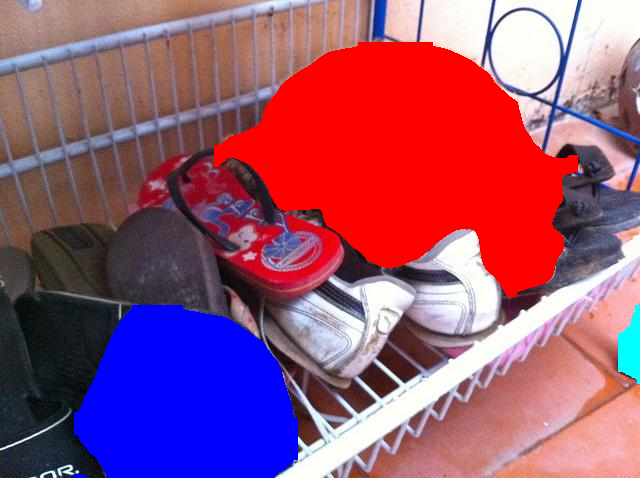 |
Detections present but masks do not match | high | false_negativelow_iouclassification_errorfalse_positive | 0.0000 | 1 | 3 | no | 1 | 3 | 1 ground-truth instance(s) were missed (false negative). Zero average IoU on matched instances — masks do not overlap ground truth. Instance count or class alignment does not match ground truth. 3 extra predicted instance(s) not matched to ground truth. |
000000000472.jpg |
Detections present but masks do not match | high | false_negativelow_iouclassification_errorfalse_positive | 0.0000 | 1 | 1 | no | 1 | 1 | 1 ground-truth instance(s) were missed (false negative). Zero average IoU on matched instances — masks do not overlap ground truth. Instance count or class alignment does not match ground truth. 1 extra predicted instance(s) not matched to ground truth. |
000000000581.jpg 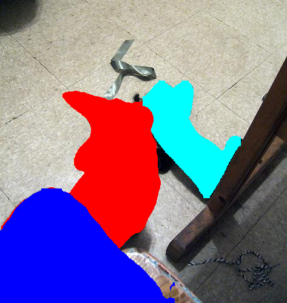 |
Detections present but masks do not match | high | false_negativelow_iouclassification_errorfalse_positive | 0.0000 | 1 | 3 | no | 1 | 3 | 1 ground-truth instance(s) were missed (false negative). Zero average IoU on matched instances — masks do not overlap ground truth. Instance count or class alignment does not match ground truth. 3 extra predicted instance(s) not matched to ground truth. |
sample.jpg 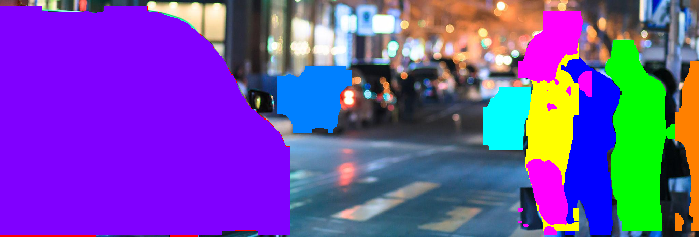 |
Cannot evaluate (no ground truth) | high | no_groundtruthlow_iouclassification_errorfalse_positive | 0.0000 | 0 | 9 | no | 0 | 9 | No ground-truth label file for this image; metrics are not fully comparable. Zero average IoU on matched instances — masks do not overlap ground truth. Instance count or class alignment does not match ground truth. 9 extra predicted instance(s) not matched to ground truth. |